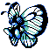
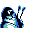

#012
Butterfree
BugPsychic
In battle, it flaps its wings at high speed to release highly toxic dust into the air
Base stats Total 400
HP65
Attack85
Defense60
Speed90
Special100
Evolution
Evolves from Metapod — Level 18
Pokédex data
- Species
- Butterfly Pokémon
- Height
- 3'07"
- Weight
- 71.0 lb
- Catch rate
- 45 / 255
- Base experience
- 160
- Growth rate
- Medium Fast
Level-up moves 11
LevelMoveTypePowerAcc.PP
TM / HM moves 20
TM / HMMoveTypePowerAcc.PP
Wild locations
Not found in the wild — evolve, trade or catch it elsewhere.